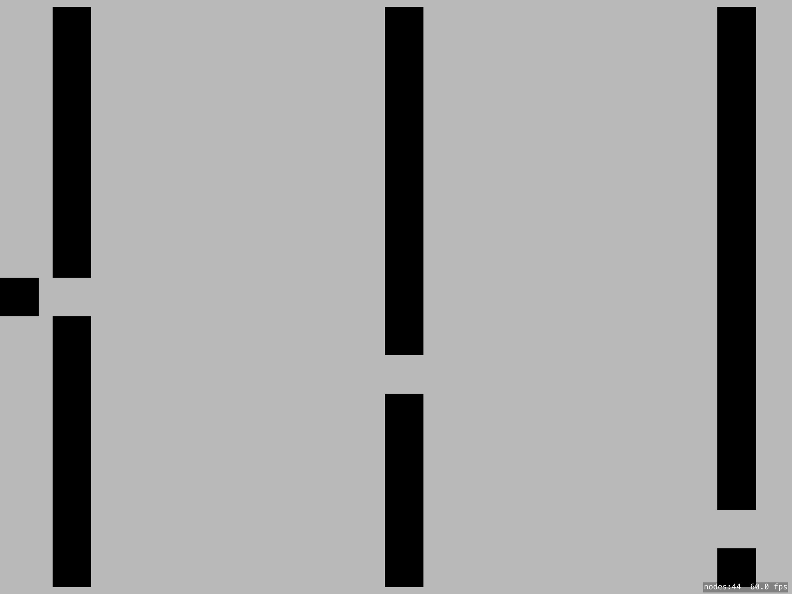
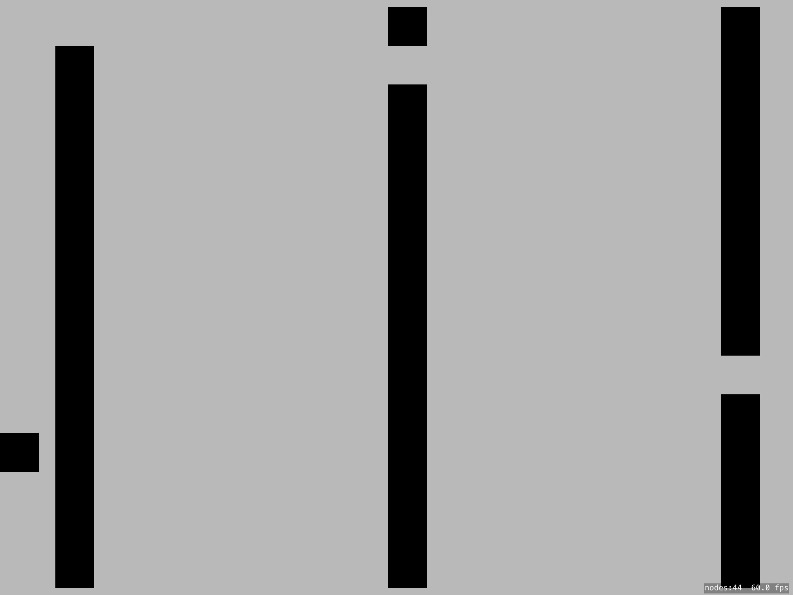

Block Dodger (Working Title)
I. High Concept
Move your character to fit through the gaps while shooting or avoiding enemies coming at you throughout the level.
II. Genre
This game is considered a 2D shooter/endless runner. You must work your way through the level in a matter similar to a platformer while defeating enemies with a shooter mechanic.
III. Platform
For now, this will be a tablet game. However, our future goals are to make it compatible for both phone and tablet. Also, we will probably stick to landscape orientation.
IV. Story
As of right now the story is a little more abstract. Your working your way through the level whie avoiding/killing enemies.
V. Esthetics
The game will feature a minimalist art style, focusing on a succint and simple color scheme and only simple shapes.
All sound in the game will be generated according to game events. Essentially, although not a rythmm game at the heart, people playing the game will believe the game has a corresponding song to go with each level.
Each event in the game(moving, shooting, blocks entering) will be bound to a sound effect, and this will create the desired sound effect.
VI. Gameplay
Mechanics
Your main mechanics are fitting through small gaps, much like the game Flappy Bird, and shooting at enemies coming at you. Your character will be on the left side of the screen and you have to move it up or down to fit through gaps that will get increasingly smaller as the game goes on. Enemies will be coming from the right side of the screen and you have to choose to avoid them, or shoot them.
Control
Most of the game will be controlled through touch. Tap the left side of the screen to go up and the right side of the screen to go down. Tap and hold to shoot.
Teaching the game/New user experience aka "Onboarding"
With simple controls we will have no need for a full-on instructions screen. At the beginning of the game we can have a control overlay that disappears when the game starts.
Player learning
Since this game is an "endless runner" there really is no beating it. It's all about getting the high score. The longer you last, the smaller gaps you have to fit through and the more enemies come at you.
VII. Screenshots

VIII. Other
Something else you'd like to say that doesn't fit elsewhere. Also discuss any external libraries you might use. All libraries are subject to Professor approval.
IX. About the developer(s)
Aidan McInerny: I am a third year Game Design and development student. I like a lot of thigns, especially hardware and level level programming. Please check out my website if you are curious to find out more!
McClellan, Gregory: I am a 3rd year Game Design and Development major with a minor in Mathematics. I enjoy level design and world building in games, but I also think I might like the game physics part as well. Still trying to find my exact "calling".